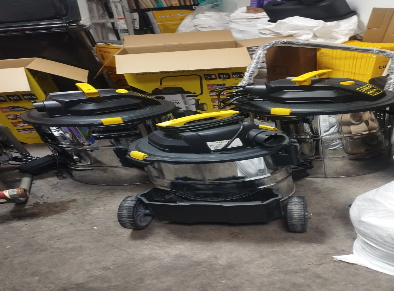
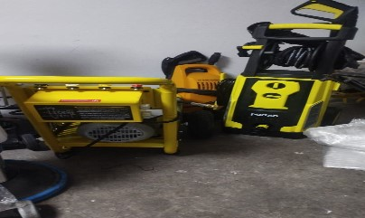
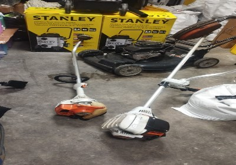

Catálogo de maquinaria y herramientas
Equipos utilizados para fortalecer la calidad del servicio de limpieza institucional.

Abrillantadora industrial
Equipo utilizado para mantenimiento, brillo y limpieza profunda de pisos.

Aspiradora industrial
Equipo utilizado para aspirado de polvo, residuos y superficies internas.

Hidrolavadora
Equipo utilizado para limpieza de exteriores y superficies de alto tránsito.

Escaleras Tijera
La escalera tijera se utiliza para ejecutar labores de limpieza en superficies elevadas, tales como ventanas, mamparas, luminarias, techos, ductos de ventilación y otras áreas de difícil acceso, garantizando una adecuada cobertura del servicio y reduciendo riesgos ergonómicos al personal.

Motoguadaña
La motoguadaña se utiliza para ejecutar actividades de mantenimiento de áreas verdes, control de maleza, corte de césped y limpieza de bordes en jardines, parques, caminerías y espacios exteriores de las instituciones donde se presta el servicio.

Bombas de Fumigación
La bomba de fumigación se utiliza para ejecutar labores de desinfección, control de plagas, aplicación de productos sanitizantes y mantenimiento de áreas verdes, contribuyendo a garantizar condiciones adecuadas de higiene, salubridad y conservación de los espacios intervenidos.